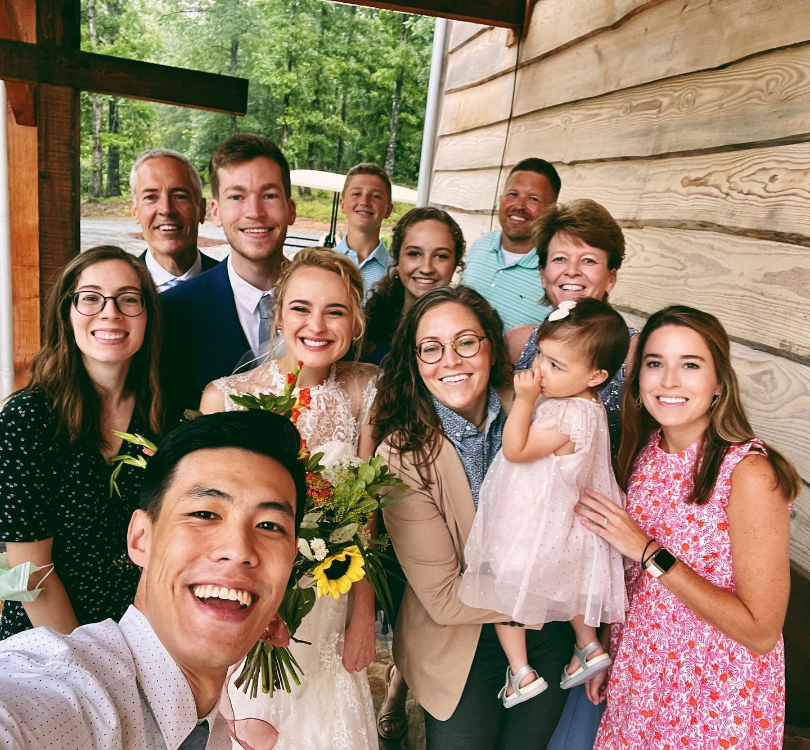

Long before I knew anything about software I was playing sports. Volleyball was my true love, and it took me all the way through college at Mississippi State. 🐮🛎️ I come from a long line of teachers and coaches, so it was natural for me to pursue the same. After undergrad I chose a career in education - teaching ESL, PE, and coaching in both US public schools and abroad.
In the classroom, I learned the importance of patience, adaptability, and meeting students where they are. Teaching taught me how to break down complex ideas into structured, understandable steps.
On the court, I learned how to lead through service, build up others, and create an environment where people can succeed together. Coaching was more than just teaching skills, it was about unlocking potential.
These lessons are the foundation of my leadership philosophy. I see my role not just as a leader but as a guide.
Now, in tech, I use these same skills to tackle large-scale projects. Whether it’s leading a product launch, architecting an application end to end, or managing a cross-functional team, I approach each task with the same structured mindset—making sure the roadmap is clear, the steps are logical, and everyone involved feels confident in the process.
Long before I knew anything about software I was playing sports. Volleyball was my true love, and it took me all the way through college at Mississippi State. 🐮🛎️ I come from a long line of teachers and coaches, so it was natural for me to pursue the same. After undergrad I chose a career in education - teaching ESL, PE, and coaching in both US public schools and abroad.
In the classroom, I learned the importance of patience, adaptability, and meeting students where they are. Teaching taught me how to break down complex ideas into structured, understandable steps.
On the court, I learned how to lead through service, build up others, and create an environment where people can succeed together. Coaching was more than just teaching skills, it was about unlocking potential.

This is some of my family. I have 8 younger siblings, 6 nieces and nephews, and lots of in-laws.
These lessons are the foundation of my leadership philosophy. I see my role not just as a leader but as a guide.
Now, in tech, I use these same skills to tackle large-scale projects. Whether it’s leading a product launch, architecting an application end to end, or managing a cross-functional team, I approach each task with the same structured mindset—making sure the roadmap is clear, the steps are logical, and everyone involved feels confident in the process.
I grew up in a large, multicultural family, where the sounds of English, Spanish, and Russian filled our home.
With eight younger siblings—five adopted from Ukraine—our household was a rich blend of languages and traditions. We lived in several places in Alabama before moving to Quito, Ecuador, and hosted exchange students from East Asia, creating a truly global community in our home.
With eight younger siblings—five adopted from Ukraine—our household was a rich blend of languages and traditions. We lived in several places in Alabama before moving to Quito, Ecuador, and hosted exchange students from East Asia, creating a truly global community in our home.
My upbringing shaped my resilience and broadened my perspective. Navigating different cultures, languages, and personalities gave me the skills to lead diverse teams with empathy and patience.
It also taught me that there’s rarely a single right answer—success often comes from embracing multiple viewpoints, a mindset that informs how I approach leadership and problem-solving in tech.
While I loved teaching, I knew I wanted more.
I was first introduced to computer science when our school participated in the Hour of Code - and while my students played games to learn coding fundamentals, I discovered another language: JavaScript. Learning to write code gave me a sense of fulfillment that resonated with both the analytical and creative sides of my brain, and after a nearly a year of self-study, I transitioned to software engineering and landed my first role at Shipt.
Since then, I’ve co-founded startups, built products from the ground up, and most recently served as the Chief Technology Officer at Landing, where we helped people live like locals across the US. I was the founding software engineer and the first employee at Landing, and over the last 5.5 years, I’ve gained extensive experience that led me to lead the technology organization, and raised a cool $375 million on the way.
Today, I’m focused on channeling my passions and using my experience to guide others in their growth, whether it’s building a product from scratch or scaling a team.
35mm - Badlands National Park - 2024